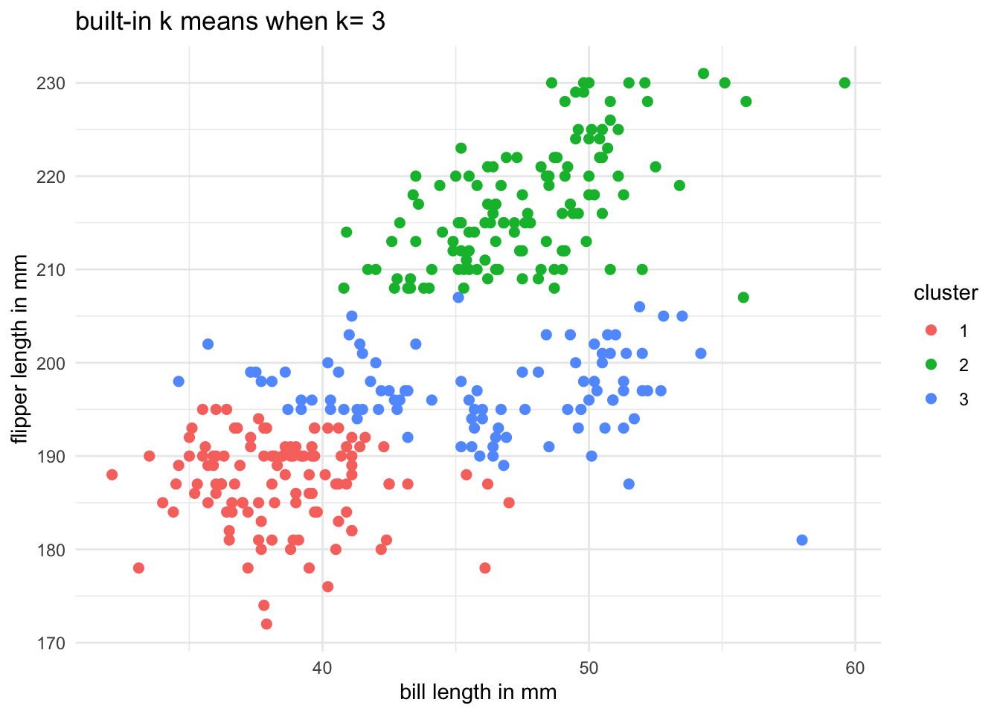

Here I am writing my own code to implement the k-means algorithm. I make several visualizations of the various steps the algorithm takes so you could “see” the algorithm working. Then I test the algorithm on the Palmer Penguins dataset, specifically using the bill length and flipper length variables. In addition, I compare the results to the built-in kmeans function in R or Python._
Further, I calculate both the within-cluster-sum-of-squares and silhouette scores (you can use built-in functions to do so) and plot the results for various numbers of clusters (ie, K=2,3,…,7). The “right” number of clusters, as suggested by the two metrics: Elbow Method and Silhouette Score, is K = 3,and I will explain this following:
library(tidyverse)
── Attaching core tidyverse packages ──────────────────────── tidyverse 2.0.0 ──
✔ dplyr 1.1.4 ✔ readr 2.1.5
✔ forcats 1.0.0 ✔ stringr 1.5.1
✔ ggplot2 3.5.1 ✔ tibble 3.2.1
✔ lubridate 1.9.3 ✔ tidyr 1.3.1
✔ purrr 1.0.2
── Conflicts ────────────────────────────────────────── tidyverse_conflicts() ──
✖ dplyr::filter() masks stats::filter()
✖ dplyr::lag() masks stats::lag()
ℹ Use the conflicted package (<http://conflicted.r-lib.org/>) to force all conflicts to become errors
library(cluster)library(factoextra)
Welcome! Want to learn more? See two factoextra-related books at https://goo.gl/ve3WBa
library(dplyr)
penguins <-read.csv("~/Desktop/palmer_penguins.csv")penguins <- penguins %>%filter(!is.na(bill_length_mm), !is.na(flipper_length_mm))data_numeric <- dplyr::select(penguins, bill_length_mm, flipper_length_mm)#visualize the original dataset we haveggplot(data_numeric, aes(x = bill_length_mm, y = flipper_length_mm)) +geom_point() +labs(title ="palmer penguins data",x ="bill length in mm",y ="flipper length in mm")+theme_minimal()
result <-my_kmeans(data_numeric, k =3)plot_data <- data_numeric %>%#plot the resultmutate(cluster =as.factor(result$cluster))ggplot(plot_data, aes(x = bill_length_mm, y = flipper_length_mm, color = cluster)) +geom_point(size=2) +geom_point(data =as.data.frame(result$centers),aes(x = bill_length_mm, y = flipper_length_mm),color ="black", size =4, shape =8) +labs(title ="k means when k = 3",x ="bill length in mm",y ="flipper length in mm",color ="Cluster") +theme_minimal()
km_builtin <-kmeans(data_numeric, centers=3, nstart=10)builtin_data <- data_numeric %>%mutate(cluster =as.factor(km_builtin$cluster))#plotggplot(builtin_data, aes(x = bill_length_mm, y = flipper_length_mm, color = cluster)) +geom_point(size =2) +labs(title ="built-in k means when k= 3", x ="bill length in mm",y ="flipper length in mm",color ="cluster")+theme_minimal()

# use the WSS and Silhouette to analyze multiple kwss <-c()sil <-c()for (k in2:7) { km <-kmeans(data_numeric, centers = k, nstart=10) wss[k] <- km$tot.withinss sil_score <-silhouette(km$cluster, dist(data_numeric)) sil[k] <-mean(sil_score[, 3])}#elbow methodplot(2:7, wss[2:7], type ="b", pch =10,xlab ="number of clusters K",ylab ="within-cluster sum of squares",main ="elbow method")
#silhouette methodplot(2:7, sil[2:7], type ="b",pch =10,xlab ="number of clusters K",ylab ="average silhouette score",main ="silhouette method")
My Analysis:
I performed the K-means clustering based on the bill length and flipper length measurements from Palmer Penguins dataset. Here are the things I found during my analysis:
I first created the visualization of the original data in the first scatter plot above. It shows a clear structure with visible groupings,which suggests the potential clusters in the data. My hand-coded K-means algorithm has K = 3 and it successfully identified three distinct clusters. The visual separation is very strong, and the cluster centers are marked by stars. These marks could reflect the well-separated group means.
I then compare it with the result from R’s built-in kmeans() function (also with K = 3) and it shows a very similar cluster structure, confirming that my hand-coded part is correct.
For the Elbow Method, the within-cluster sum of squares decreases sharply from K = 2 to K = 3, and then the rate of decrease slows—indicating an elbow at K = 3. It indicates 3 is a good number of clusters.
For the Silhouette Method, the silhouette score peaks at K = 2, but is still high at K = 3, after which it drops off. It demonstrates both K = 2 and K = 3 are plausible for this case, but K = 3 better captures subgroup structure without over-generalizing.
2b. Key Drivers Analysis
For this section, I replicate the table on slide 75 of the session 5 slides. Specifically, using the dataset provided in the file data_for_drivers_analysis.csv, calculate: pearson correlations, standardized regression coefficients, “usefulness”, Shapley values for a linear regression, Johnson’s relative weights, and the mean decrease in the gini coefficient from a random forest.
If you want a challenge, add additional measures to the table such as the importance scores from XGBoost, from a Neural Network, or from any additional method that measures the importance of variables.
library(dplyr)library(lm.beta)
Warning: package 'lm.beta' was built under R version 4.3.3
library(relaimpo)
Warning: package 'relaimpo' was built under R version 4.3.3
Loading required package: MASS
Attaching package: 'MASS'
The following object is masked from 'package:dplyr':
select
Loading required package: boot
Warning: package 'boot' was built under R version 4.3.3
Loading required package: survey
Loading required package: grid
Loading required package: Matrix
Attaching package: 'Matrix'
The following objects are masked from 'package:tidyr':
expand, pack, unpack
Loading required package: survival
Warning: package 'survival' was built under R version 4.3.3
Attaching package: 'survival'
The following object is masked from 'package:boot':
aml
Attaching package: 'survey'
The following object is masked from 'package:graphics':
dotchart
Loading required package: mitools
This is the global version of package relaimpo.
If you are a non-US user, a version with the interesting additional metric pmvd is available
from Ulrike Groempings web site at prof.beuth-hochschule.de/groemping.
library(randomForest)
Warning: package 'randomForest' was built under R version 4.3.3
randomForest 4.7-1.2
Type rfNews() to see new features/changes/bug fixes.
Attaching package: 'randomForest'
The following object is masked from 'package:dplyr':
combine
The following object is masked from 'package:ggplot2':
margin
library(iml)
Warning: package 'iml' was built under R version 4.3.3
library(knitr)
Warning: package 'knitr' was built under R version 4.3.3
df <-read.csv("~/Desktop/data_for_drivers_analysis.csv")y <- df$satisfactionX <- dplyr::select(df, -satisfaction, -brand, -id)lm_fit <-lm(satisfaction ~ ., data = dplyr::select(df, -brand, -id)) #linear regression modelpearson_corr <-sapply(X, function(x) cor(x, y, use ="complete.obs")) #Pearson correlationstd_beta <-lm.beta(lm_fit)$standardized.coefficients[-1]relimp <-calc.relimp(lm_fit, type ="lmg")$lmg #usefulness/LMGjohnson <-calc.relimp(lm_fit, type ="lmg")$lmg #Johnson’s relative weights predictor <- Predictor$new(model = lm_fit, data = X, y = y) #SHAP importance IMLshap <- FeatureImp$new(predictor, loss ="mse")
Warning: package 'xfun' was built under R version 4.3.3
Warning: package 'ggrepel' was built under R version 4.3.3
Warning: package 'data.table' was built under R version 4.3.3
Warning: package 'checkmate' was built under R version 4.3.3
Warning: package 'farver' was built under R version 4.3.3
Warning: package 'yaml' was built under R version 4.3.3
Warning: package 'parallelly' was built under R version 4.3.3
Warning: package 'Metrics' was built under R version 4.3.3
Warning: package 'digest' was built under R version 4.3.3
Warning: package 'future' was built under R version 4.3.3
Warning: package 'fastmap' was built under R version 4.3.3
Warning: package 'colorspace' was built under R version 4.3.3
Warning: package 'cli' was built under R version 4.3.3
Warning: package 'future.apply' was built under R version 4.3.3
Warning: package 'corpcor' was built under R version 4.3.3
Warning: package 'withr' was built under R version 4.3.3
Warning: package 'backports' was built under R version 4.3.3
Warning: package 'rmarkdown' was built under R version 4.3.3
Warning: package 'evaluate' was built under R version 4.3.3
Warning: package 'rlang' was built under R version 4.3.3
Warning: package 'Rcpp' was built under R version 4.3.3
Warning: package 'glue' was built under R version 4.3.3
Warning: package 'DBI' was built under R version 4.3.3
Warning: package 'jsonlite' was built under R version 4.3.3
shap_values <-setNames(shap$results$importance, shap$results$feature)rf_model <-randomForest(x = X, y = y, importance =TRUE) #random gorest Gini
Warning in randomForest.default(x = X, y = y, importance = TRUE): The response
has five or fewer unique values. Are you sure you want to do regression?
The table above shows me the trust, impact, and service are the most important factors that influencing the customer satisfaction. The finding here is consistent across all importance metrics, including the Pearson correlation, standardized regression coefficients, LMG/Shapley values, Johnson’s Epsilon, SHAP, and random forest Gini. These results suggest improving these areas is likely to have the greatest effect on overall satisfaction.